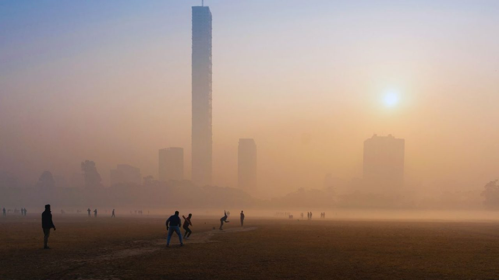

KOLKATA EDDITION
পশ্চিমবঙ্গে তীব্র শীতের সম্ভাবনা
 কলকাতা, ৬ ডিসেম্বর — এ বছর পশ্চিমবঙ্গে শীত নামতে বেশ দেরি হলেও আবহাওয়াবিদেরা ইঙ্গিত দিচ্ছেন, ডিসেম্বরের দ্বিতীয় সপ্তাহ থেকে রাজ্যে শুরু হতে চলেছে তীব্র শৈত্যপ্রবাহ। বিশেষ করে উত্তরের পাহাড়ি জেলা দার্জিলিং, কালিম্পং এবং বিহার সীমান্তবর্তী মালদা, উত্তর ও দক্ষিণ দিনাজপুরে এবার শীতের খোঁজ মিলতে পারে আগেভাগেই। এমনকি দক্ষিণবঙ্গের কলকাতা, হাওড়া, হুগলি, নদিয়া, মুর্শিদাবাদ থেকে শুরু করে পূর্ব ও পশ্চিম মেদিনীপুরেও তাপমাত্রা দ্রুত নামার সম্ভাবনা তৈরি হয়েছে। আবহাওয়া দপ্তরের ভাষায়, “এবার শীত একটু জোরে বইতে পারে।” গত কয়েক বছর পশ্চিমবঙ্গে তেমন কোনও প্রচণ্ড শীত দেখা যায়নি। অনেক বছরই ডিসেম্বর পেরিয়ে জানুয়ারিতে ঢোকার পর তাপমাত্রা কমত। কিন্তু এ বছর পরিস্থিতি একটু আলাদা। উত্তরের দিকে জমে থাকা প্রবল ঠান্ডা বাতাস এবং দক্ষিণের শুকনো হাওয়া মিলেই রাজ্যের দিকে ধেয়ে আসছে ঠান্ডার ঢেউ। বিশেষ করে হিমালয়ের পাদদেশে তাপমাত্রা দ্রুত কমছে। দার্জিলিং ও কালিম্পংয়ে ইতিমধ্যেই রাতের তাপমাত্রা ৩–৫ ডিগ্রির আশেপাশে ঘোরাফেরা করছে। দিনেও রোদের উষ্ণতা ঠিকমতো টের পাওয়া যাচ্ছে না। দক্ষিণবঙ্গে শীতের শুরুটা সাধারণত একটু দেরিতে হয়। কিন্তু আবহাওয়াবিদেরা বলছেন, উত্তর ভারত থেকে আসা শুষ্ক উত্তর-পশ্চিম হাওয়া এ বছর আগেভাগেই শক্তি পাচ্ছে। ফলে ডিসেম্বরের মাঝামাঝি থেকেই কলকাতা ও আশেপাশের জেলায় রাতের তাপমাত্রা ১২–১৩ ডিগ্রির নিচে নেমে যেতে পারে। কিছু দিনে ১০ ডিগ্রির কাছাকাছি পৌঁছে যাওয়ার সম্ভাবনাও রয়েছে। গত বছর কলকাতার সর্বনিম্ন তাপমাত্রা ছিল প্রায় ১১ ডিগ্রি, কিন্তু এ বছর সেটাকে ছাপিয়ে যাওয়ার অনুমান করছেন বিশেষজ্ঞরা। আবহাওয়া দপ্তরের বিশেষজ্ঞ সঞ্জীব রায় বলেন, “এ বছর শীত দেরিতে এলেও হাওয়ার গতিবিধি বলছে ডিসেম্বর শেষে ও জানুয়ারি জুড়ে তাপমাত্রা বেশ কমতে পারে। লা নিনা ও জেট স্ট্রিমের গতিবিধি এর পেছনে গুরুত্বপূর্ণ ভূমিকা রাখছে।” তাঁর মতে, প্রশান্ত মহাসাগরের লা নিনা প্রভাবের কারণে ভারতের উত্তর ও উত্তর-পূর্ব দিকে ঠান্ডা প্রবাহ আরও শক্তিশালী অবস্থায় থাকে। এর প্রভাব ধীরে ধীরে দক্ষিণবঙ্গের দিকেও ছড়িয়ে পড়ে। এদিকে সাধারণ মানুষের মধ্যে শীত নিয়ে উচ্ছ্বাস যেমন আছে, তেমনই আছে চিন্তাও। বিশেষ করে যাঁরা খোলা জায়গায় কাজ করেন, যেমন ভ্যানচালক, রিকশাচালক, রাস্তায় দোকান করেন বা রাতভর ডিউটি করা নিরাপত্তারক্ষী—তাঁদের অনেক বেশি সতর্ক থাকার বার্তা দিচ্ছেন চিকিৎসকেরা। দীর্ঘক্ষণ ঠান্ডা বাতাসে থাকলে সর্দি-কাশি, জ্বর, গলা বসে যাওয়া বা শ্বাসকষ্টের মতো সমস্যা বাড়তে পারে। শিশু ও বয়স্কদের ক্ষেত্রেও বিশেষ সাবধানতার প্রয়োজন। চিকিৎসক অর্ণব মিত্র বলেন, “হঠাৎ করে ঠান্ডা নামলে অনেকেই ভেবে ওঠার সুযোগ পান না। তাই আগাম প্রস্তুতি রাখতে হবে। বিশেষ করে যাঁদের শ্বাসযন্ত্রের রোগ আছে, তাঁদের সাবধানে থাকতে হবে। ঠান্ডায় গরম কাপড়, টুপি, মোজা এগুলো অবশ্যই ব্যবহার করতে হবে।” পাশাপাশি তিনি জানালেন, কুয়াশা বেশি হলে রাতে গাড়ি চালানো বা বাইকে যাতায়াত করার সময় ভালোভাবে হেডলাইট ও হেলমেট ব্যবহার করা জরুরি। কৃষকদের ওপরও এই শীতের প্রভাব পড়তে পারে। পশ্চিমবঙ্গের বহু জায়গায় আলু, ধান, সর্ষে, সবজির মতো শীতকালীন ফসল এখন বাড়ছে। যদি তাপমাত্রা হঠাৎ খুব নিচে নেমে যায়, কিছু এলাকায় পাতাঝরা বা ফসলের স্বাভাবিক বৃদ্ধিতে সমস্যা দেখা দিতে পারে। কৃষি দপ্তর জানাচ্ছে, “শীত বেশি পড়লে জমিতে জল ধরে রাখা জরুরি, যাতে গাছের গোড়ায় অতিরিক্ত ঠান্ডা না লাগে।” একইসঙ্গে তুষারপাত না হলেও ভোরের কুয়াশা পাতায় জমে থাকলে তার ক্ষতি হতে পারে। তবে সাধারণভাবে বলা হচ্ছে—রাজ্যে এবার শীত একটু “মন ভরানো” হবে। বহু বছর পর হয়তো কলকাতার মানুষ সকালবেলায় হাত ঘষে হাঁটতে বেরোবেন, রাস্তায় চায়ের দোকানে ভিড় থাকবে, গরম পোশাকের বাজার জমে উঠবে। পার্ক, ইকোপার্ক, নিউটাউনের মতো জায়গায় পর্যটকের ভিড়ও বাড়তে পারে। বড়দিন থেকে নববর্ষ—এই সময়টায় শহর আরও প্রাণবন্ত হয়ে উঠতে পারে। তবে শীত যতই উপভোগ্য হোক, সতর্কতাও জরুরি। অধিরা পাল নামে এক কলেজছাত্রী বললেন, “শীত তো ভালোই লাগে, কিন্তু হঠাৎ ঠান্ডা লেগে সর্দি হলে মেজাজটাই খারাপ হয়ে যায়। তাই এবার একটু আগে থেকে গরম কাপড় বের করে রাখছি।” অনেক পরিবার ইতিমধ্যেই কম্বল, শাল, উলের পোশাক, হিটার—এসব প্রস্তুত করে ফেলছেন। সব মিলিয়ে বলা যায়, এ বছর পশ্চিমবঙ্গে শীত একটু দেরিতে এলেও তীব্রভাবেই নামছে। উত্তরবঙ্গ তো বরাবরই ঠান্ডার রাজ্য, এবার দক্ষিণবঙ্গও সেই তালিকায় ঢুকে পড়তে পারে। আবহাওয়ার পরিচালক বলেন, “শীতের জোর বাড়লেও গরম কাপড়, গরম পানি, আর সতর্কতা—এই তিনটে জিনিস মাথায় রাখলেই শীত উপভোগ করা যাবে।” রাজ্যবাসী সেই অপেক্ষায়—কবে ঠিক ঠান্ডা তার আসল রূপ দেখাবে।